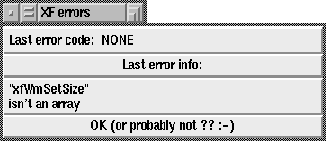

This procedure pops up a dialog box, where the last error that occurred during the execution of XF is displayed. Most errors that are displayed are ``correct'', which means that it is ok that they occur.

Figure: The procedure XFProcProgErros